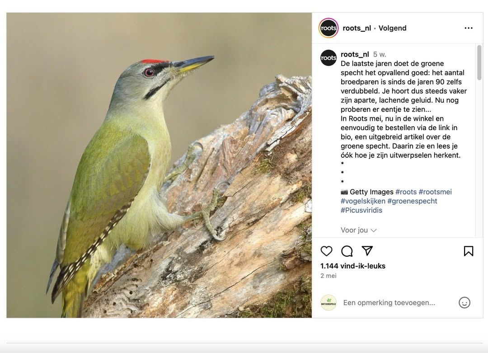

Grijskopspecht, geen groene specht
12 juni 2024 · Roots
- Op de foto
- Grijskopspecht
- Het ging over
- Groene specht

Helaas doet de Grijskopspecht het niet zo goed in Nederland. De laatste was zelfs al 10 jaar geleden! Volgens @roots_nl gaat het goed met de Groene specht in Nederland. Laat dan ook een foto van de Groene specht zien, want die zijn er meer dan genoeg.